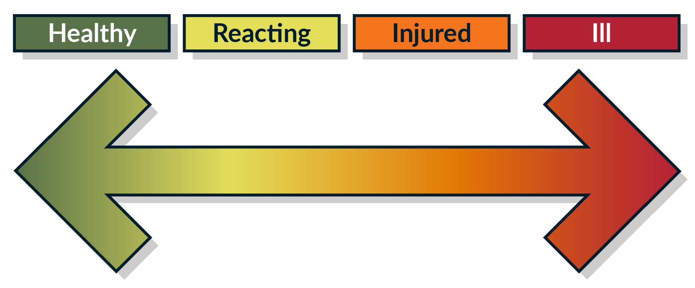

A continuum
Mental well-being isn’t an on-off switch. It’s actually a continuum, experienced differently from person to person, that can range from good or great mental health, to adequate or poor mental health, to mental illness.[19] Someone who feels mentally unwell may not have a serious mental illness or a diagnosis. Similarly, someone who is doing well mental health-wise may in fact have a mental illness.


Good mental health does not necessarily mean that you are happy and confident 100% of the time. Rather, it can be thought of as living and coping well despite your problems. However, all people do not have the same disposition to positive mental well-being, the same coping resources, or the same support mechanisms.[20]
Periods of struggling with our mental health can be tied to a particular traumatic event, a chemical imbalance, or both. Regardless of the cause, these periods of struggle can often be managed and supported.
Mental well-being, mental health challenges, and mental illness may be experienced differently from one person to the next, with varying degrees of difficulty and distress and different social and clinical outcomes. We need to know ourselves and develop increased self-awareness to pinpoint how we are doing in terms of our mental health, when to reach out for support, and how to practise personalized self-care.
The Mental Health Continuum Self-Check can help us to identify how we are doing and when there is a need for support.
When using the self-check tool, you should consider how you have been feeling over a period of time rather than in that instant.
19 World Health Organization, Mental health: strengthening our response , June 17, 2022.
20 Ibid